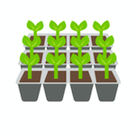
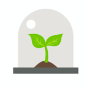
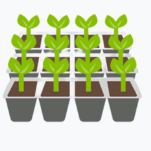
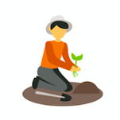

| Vous avez besoin d': | Aborder un sujet |
Approfondir un sujet |
Accompagner un groupe |
Apprendre des compétences |
| Les formats | Petit Atelier Ludique | Les 3 A | Cercle de Parole | Formation 2 jours |
|---|---|---|---|---|
| Description |
|
|
|
|
|  |  |  |  | |
| Allégorie | C'est semer la curiosité et l'intérêt en plantant une graine dans la conscience des participant·es. | C'est l'analyse de la terre, le semage, le tuteur puis l'arrosage | Ce sont des arrosages réguliers et délicats qui favorisent la croissance de la parole, un processus de libération de soi et du respect des autres. | C'est l'apprentissage pour devenir un jardinier expérimenté. |
| Prix | 390€ les 3h | 1440€ les 12h30 | 690€ les 6h | 1800€ les 12h contacter nous pour + |
| Lieux | Hérault, Gard, ou à discuter... | Occitanie, PACA ou à discuter... | Montpellier (10km) ou à discuter... | Occitanie, PACA ou à discuter... |